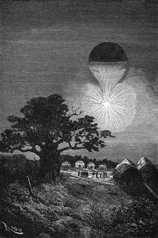

Světelný pruh. – Missionář. – Únos v zářivém paprsku. – Kněz lazarist. – Nevalná naděje. – Doktorova péče. – Život plný odříkání. – Přelet přes sopku.
Fergusson zamířil v různé strany prostoru mohutný paprsek světla a utkvěl jím na místě, kde se ozýval zděšený křik. Jeho dva soudruzi pohlédli tam dychtivě.
Baobab, nad nímž se vznášela Viktorie takměř nehybně, vypínal se uprostřed mýtiny; mezi poli sesamovými a cukřinovými bylo rozeznati asi padesát nízkých, kuželovitých chatrčí, okolo nichž hemžil se četný kmen.
Na sto stop pod balonem trčel kůl. U tohoto kůlu ležel lidský tvor, mladý muž nejvýše třicetiletý dlouhých černých vlasů, polonahý, hubený, potřísněný krví a posetý ranami, s hlavou na prsa skloněnou jako Kristus na kříži. Něco kratších vlasů na temeni hlavy jevilo ještě místo tonsury napolo zarostlé.
„Missionář! kněz!“ zvolal Joe.
„Ubohý nešťastník,“ litoval lovec.
„Zachráníme ho, Dicku!“ pravil doktor, „zachráníme ho!“
Dav černochů, spatřiv balon, podobný ohromné vlasatici s chvostem stkvoucího světla, byl zachvácen zděšením snadno pochopitelným. Slyše jich křik, vztyčil zajatec hlavu. Oči zaleskly se mu náhlou nadějí, a jakkoli mu nešlo hrubě na rozum, co se děje, vztáhl ruce k nenadálým záchrancům.
„Žije! žije!“ zajásal Fergusson; „Bůh buď pochválen! Ti divoši trnou náramným strachem! Zachráníme ho! Jste-li hotovi, přátelé?“
„Jsme hotovi, Samuele.“
„Joe, shas dmuchavku.“
Rozkaz doktorův vykonán. Vánek ledva znatelný hnal zvolna nad zajatce Viktorii, spouštějící se zároveň nepozorovaně k zemi, ježto napjetí vodíku ubývalo. Asi po deset minut vznášel se ve světelných vlnách. Fergusson pustil na dav zářivý proud, jenž rýsoval tu a tam rychlé, ostré pruhy světelné. Kmen, podléhaje nevýslovné hrůze, rozprchl se ponenáhlu do chyší, a kolem kolu rozhostila se opuštěnost. Doktor byl tudíž právem spoléhal na nevídaný zjev Viktorie, která metala sluneční paprsky do této čiré temnoty.
Loďka snesla se na zemi. Avšak několik odvážnějších černochů vracelo se s velkým křikem, pochopivše, že se jim oběť vymyká. Kennedy chopil se pušky, leč doktor mu rozkázal, aby nestřílel.
Kněz klečel, nemaje již ani tolik síly, aby se udržel na nohou; nebyl ani ke kolu přivázán, neboť vzhledem k jeho slabosti byla pouta zbytečná. Když se loďka blížila k zemi, odhodil lovec zbraň, a uchopiv kněze kolem těla vyzdvihl jej do loďky, a v tom zároveň shodil Joe rázem dvě stě liber přítěže. Doktor očekával, že vzletí se svrchovanou rychlostí; ale mimo vše nadání stanul balon nepohnutě, sotva se byl vznesl na čtyři stopy od země.
„Kdo nás drží?“ zvolal s názvukem obavy.
Několik divochů přibíhalo, strašlivě ryčíce.
„Ó!“ zvolal Joe, vykloniv se přes okraj. „Jeden z těch černých proklatců zachytil se pod loďkou!“
„Dicku! Dicku!“ vzkřikl doktor, „schránku s vodou!“
Dick pochopil myšlenku přítelovu, a vyzdvihnuv jednu ze schránek s vodou, která vážila přes sto liber, smetl ji s loďky. – Viktorie, zbavena náhle přítěže, vymrštila se skokem do výše tří set stop za hrozného řevu kmene, jemuž zajatec unikl v záplavě oslnivého světla.
„Hura!“ vzkřikli dva soudruzi doktorovi.
Pojednou učinil balon nový skok, jejž jej povznesl o více než tisíc stop.
„Co to?“ zeptal se Kennedy, div nepozbyv rovnováhy.
„Nic to není! ten lotr nás pustil,“ odpověděl klidně Samuel Fergusson.
A Joe nahnuv se rychle, zahlédl ještě divocha, an se přemetá v prázdnu s roztaženýma rukama; v druhém okamžiku dopadl země a roztříštil se. Doktor odloučil pak od sebe elektrické dráty, a vůkol rozložila se opět čirá tma. Byla hodina s půlnoci.
Omdlelý Francouz promhouřil posléz oči.
„Jste zachráněn,“ pravil k němu doktor.
„Zachráněn,“ odvětil po anglicku s truchlivým úsměvem, „zachráněn od ukrutné smrti! Bratři, děkuji vám; ale moje dni jsou sečteny, ba i mé hodiny, nezbývá mi již mnoho života!“
A vysílený missionář ležel opět strnule.
„Umírá!“ zvolal Dick.
„Ne, ne,“ odtušil Fergusson nachýliv se k němu, „ale je velice sláb; položme ho pod stan.“
Uložili zlehka na své pokryvky to ubohé vychřadlé tělo, poseté jizvami a ranami posud krvácejícími, kde železo a oheň byly zůstavily na dvacateru míst bolestné sledy. Doktor natřepil z kapesníku trochu cupaniny, kterou rozestřel na rány, dříve je vymiv; přiložil obratně tyto obklady se zručností lékaře; po té vzal z lékárničky posilivý nápoj a nalil knězi několik krůpějí na rty.
Missionář stiskl slabě rty mimovolným hnutím a měl sotva tolik síly, že vydechl:
„Díky! díky!“
Doktor poznal, že potřebuje úplného klidu; stáhl záclony stanu a jal se opět říditi balon.
Vzhledem k váze nového hostě ubylo balonu skorem sto osmdesát liber přítěže; pročež vznášel se bez pomoci dmuchavky. Na úsvitě hnal jej proud zvolna k západo-severo-západu. Fergusson odhrnul záclony a díval se nějakou chvíli na spícího kněze.
„Kéž bychom zachovali na živě tohoto soudruha, jejž nám poslala nebesa!“ pravil lovec. „Máš-li naději?“
„Ano, Dicku, budeme-li ho pečlivě ošetřovati, snad okřeje v tomto vzduchu tak čistém.“
„Co ten člověk vytrpěl!“ vece Joe s pohnutím. „Víte-li pak, že se podjal smělejšího úkolu než my, přišed sám mezi tyto národy?“
„O tom není pochyby,“ odpověděl lovec.
Po všechen tento den nedopustil doktor, aby byl nešťastník vyrušen ze spánku: byla to dlouhá ztrnulost přervaná několika tichými bolestnými výkřiky a vzdechy, pro něž se Fergusson neznepokojoval.
K večeru zastavila se Viktorie prostřed temnoty a v tu noc bděl Fergusson nad bezpečností všech, kdežto Joe a Kennedy střídali se u lůžka nemocného.
Nazejtří ráno ukázalo se, že Viktorie sotva se hnula na západ. Nastával jasný, utěšený den. Nemocný zavolal na nové přátele zvučnějším hlasem. Odhrnuli stanové záclony, i dýchal s rozkoší svěží ranní vzduch.
„Jak je vám?“ otázal se Fergusson.
„Lépe, tuším,“ odpověděl. „Ale vás, přátelé, neviděl jsem ještě, leda ve snu! Jsem sotva s to, abych pochopil, co se sběhlo! Kdo jste, aby vaše jména nebyla zapomenuta v mé poslední modlitbě?“

Asi po deset minut vznášel se balon ve světelných vlnách.
„Jsme angličtí cestovatelé,“ řekl Samuel; „pokusili jsme se přeraziti Afriku v baloně, a cestou potkalo nás to štěstí, že jsme vás zachránili.“
„Věda má své reky,“ podotekl missionář.
„A náboženství má své mučenníky,“ odvětil Skot.
„Jste-li missionářem?“ optal se doktor.
„Jsem kněz z missie lazaristů. Nebesa vás ke mně seslala, nebesa buďtež za to pochválena! Život můj byl dán v oběť! Ale přicházíte z Evropy. Vypravujte mi o Evropě, o Francii! Jsem již pět let beze zpráv!“
„Pět let sám mezi těmi divochy!“ užasl Kennedy.
„Jsou to duše, čekající na vykoupení,“ odslovil mladý kněz, „bratři nevědomí a suroví, kteréž jediné náboženství může poučiti a vzdělati.“
Samuel Fergusson vyhovuje přání missionářovu, hovořil dlouho o Francii.
Kněz poslouchal dychtivě a z očí kanuly mu slzy. Ubohý mladý muž bral střídavě ruce Kennedyovy a Joovy do svých, jež pálily horečkou; doktor uvařil mu několik číšek čaje, které vypil s rozkoší; nabyl potom tolik síly, že se mohl povztyčiti a usmívati, vida, že se vznáší ve vzduchu tak čistém.
„Jste srdnatí cestovatelé,“ pravil, „a odvážný podnik se vám zdaří; spatříte zase rodiče, přátele, vlast, vy je spatříte!…“
Tu se slabost mladého kněze vzmohla tou měrou, že ho musili znova uložiti. Byl zachvácen takou ochabou, že spočíval několik hodin Fergussonovi v rukou jako bezduch. Doktor nedovedl se ubrániti dojetí. Což ztratí zase tak brzy toho, jejž vyrvali mukám? Obvázal poznovu strašlivé rány mučenníkovy a obětoval větší část vodní zásoby, ochlazuje mu palčivé údy. Zahrnul ho péčí co nejněžnější a nejrozumnější. Nemocný okřál mu ponenáhlu v náručí a nabyl opět citu, ne-li života.
Z jeho nesouvislých slov vyzvěděl doktor jeho historii.
„Mluvte svou mateřštinou,“ řekl mu; „rozumím jí, a vás to tak nenamůže.“
Missionář byl chudý mladík z bretaňské dědiny Aradona v samém Morbihanu; již z mládí pudila ho náklonnost na dráhu církevní; nemaje dosti na odříkání, chtěl život zasvětiti i nebezpečenstvům a vstoupil do řehole knězů věrověstů, jejímž slavným zakladatelem byl svatý Vincenc z Pauly; u věku dvacíti let odešel z vlasti na nehostinné pobřeží africké. Odtud pak, překonávaje překážky, podstupuje újmy, chodě a modle se, pronikl až do lůna kmenův, obývajících při pobočkách horního Nilu; po dvě léta bylo jeho náboženství odmítáno, jeho horlivost zneuznávána, jeho láska k bližnímu ve zlé vykládána; stal se zajatcem jednoho z nejukrutnějších plemen ňambarských, vydán jsa v tisíceré útrapy. Neustával však cvičiti, učiti, modliti se. Když byl tento kmen rozprášen a on zůstaven za mrtva po jednom z bojů tak častých mezi těmi národy, nenavrátil se, odkud byl přišel, alebrž pokračoval ve věrověštecké pouti. Nejlépe dařilo se mu tehda, když jej považovali za blázna; byl se obeznámil s nářečími oněch končin; hlásal víru. Posléze dostal se do těchto barbarských krajův a ještě dvě léta je procházel, puzen jsa tou nadlidskou silou, která přichází od Boha; rok již dlel u tohoto ňamňamského kmene jménem Barafrů, jednoho z nejdivočejších. Tu zemřel před několika dny náčelník, a jemu přičítána tato nenadálá smrt; usnesli se na tom, že jej obětují; čtyřicet hodin trvaly jeho muky; měl umříti při slunci o poledni, jak byl soudil doktor. Když uslyšel výstřely, zvítězila v něm přirozenost. „Pomoc! pomoc!“ vykřikl a domníval se, že sní, když hlas s nebe přicházející promluvil k němu potěšitelná slova.
„Nelituji této dokonávající jsoucnosti“ dodal; „můj život náleží Bohu!“
„Doufejte ještě,“ odpověděl mu doktor; „jsme u vás; zachráníme vás od smrti, jako jsme vás vyrvali mukám.“
„Tolik si ani od nebes nežádám,“ pravil kněz s odevzdaností. „Veleben budiž Bůh, popřáv mi, než umru, té radosti, že mohu stisknouti přátelské ruce a slyšeti mluvu své vlasti.“
Missionář seslábl opět. Den uběhl takto mezi nadějí a strachem. Kennedy byl velice dojat, a Joe utíral si potají oči.
Viktorie plula pomalu, a vítr, zdálo se, jako by šetřil jejího drahocenného břemene.
Joe ohlásil k večeru nesmírnou záři na západě. V těchto vyšších šířkách bylo lze míti za to, že je to velká severní záře; obloha zdála se planouti ohněm. Doktor prohlédl si pozorně tento úkaz. „Nemůže to býti nežli činná sopka,“ řekl.
„Vždyť nás vítr žene nad ni,“ projevil obavu Kennedy.
„Aj! přeneseme se přes ni v bezpečné výši.“
Za tři hodiny octla se Viktorie uprostřed hor; nalézala se přesně na 24° 15' délky a 4° 42' šířky; před ní chrlila hořící sopka proudy roztavené lávy a metala ohromné balvany do velké výše, ulevujíc též občas svým překypujícím útrobám vývaly tekutého ohně, jež spadaly oslňujícími vodopády. Bylo to nádherné a spolu nebezpečné divadlo, neboť vítr nesl balon s neodchylnou stálostí do tohoto zaníceného ovzduší.
Poněvadž nebylo možno této překážce se vyhnouti, bylo třeba ji přeletěti; dmuchavka rozdýmána na celý plamen, a Viktorie dostoupila výše šesti tisíc stop, zůstavivši mezi sebou a sopkou vzdálenost více než tří set sáhů.
Umírající kněz; pozoroval se svého bolestného lože hořící ten sopouch, z něhož vyšlehovaly s lomozem tisíceré stkvoucí paprsky.
„Jak je to krásné,“ pravil, „a jak neskonalá je mocnost boží ve svých nejstrašnějších projevech!“
Výlevy žhoucí lávy odívaly úbočí hory hotovými plamennými čalouny; spodní polokoule balonu leskla se ve tmě ohnivou záplavou; žárné horko sálalo až do loďky, a doktor Fergusson měl na spěch, aby vyvázl z tohoto nebezpečného postavení.
Okolo šesti hodin večer jevila se hora jen rudou tečkou na obzoru, a Viktorie brala se pokojně dál svou cestou v pásmu méně vysokém.